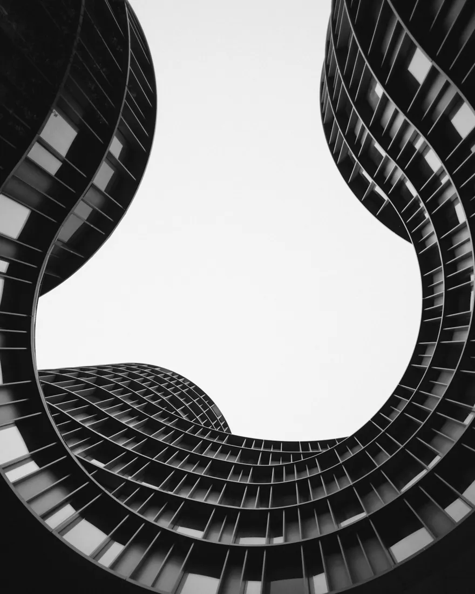

Lines of the new city

Twenty years ago a building was a box with windows. Today the facade bends, twists and reflects the sky, and the city around it changes with the light every hour.
We walked through three new districts with an architect and asked one question: what makes a building pleasant to pass by every day?
A good facade is a conversation with the street, not a monologue.

The answer was simple: rhythm, shade and a place to stop. Lines lead the eye, but a bench under a canopy keeps people.
More about architecture